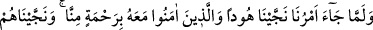
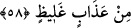

“yapmadım” cevabını almış, fakat kadın ısrar edince kocası:
“–Tamam” demiş ve anlatmış: “Bugün dükkâna bir kadın gelip bilezik istedi. Bende
de bir bilezik vardı. Bileziği kadının bileğine geçirirken kolunun beyazlığı çok hoşuma
gittiği için kolunu biraz sıktım işte.”
Bunu duyan kadın: “Hey Allah’ım ne kadar büyüksün! Demek sucunun bugünkü
hıyanetinin hikmeti buydu!” demiş. Bu olayı duyan kuyumcu, bilezik sattığı kadına:
“–Ben tevbe ettim sen de hakkını helâl et.” diyerek helâllik istemiş. Ertesi gün de sucu
tevbe ederek gelmiş:
“–Ey ev sahibi bana hakkını helâl et, çünkü beni şeytan saptırdı.” deyince kadın:
“–Sen işine git, hata sende değil, dükkândaki efendiden kaynaklandı. Allah da ona
daha dünyada iken kısas uyguladı.” diye cevap vermiş.
Bu gibi olaylar Allah’ın adâletinden ileri gelmektedir. Bu sebeple herkesin, özellikle
hâkim ve hükümdarların adâlet üzere olmaları gerekir. Çünkü adâlet hem dünyada fayda
verir, hem de âhirette.
Anlatılır ki Makedonyalı İskender -Müfessir “Zülkarneyn” diyor- Aristoteles’e:
“Hükümdarlar açısından cesurluk mu daha gereklidir yoksa adâlet mi?” diye sormuş.
Aristoteles bu soruyu şöyle cevaplamış: “Otorite sahipleri adâletli davrandıkları zaman
cesur olmak zorunda kalmazlar.”
Bu bakımdan Melik ve Deyyân olan Allah’a îmân eden ve O’nun azâbından dâima
korkanlar, adâletli davranıp haksızlık ve taşkınlık etmekten sakınırlar, böylece de en
yüce cennetteki dereceleri kazanırlar. Böyle yapmadıkları takdirde ise kendilerini
cehennem ateşine, hatta en şiddetli biçimiyle dünya azâbına atmış olurlar. Allah
Teâlâ’nın Hûd (a.s.)’ın ağzından naklettiği şu sözleri görmez misin? “Ve Rabbim sizin
yerinize başkalarını getirir.” Tabîî onların dûçar olacağı türlü lâneti de göz ardı
etmemek gerekiyor.
Sa‘dî (k.s.) şöyle der:
Bu dünyada zâlim ve kötü iş işlemiş kimse kalmaz
Onlara lânet sâbit ve bâkî kalır
Dünyada âdil olan kimseye mahşer günü mübârek olsun
Ki Arş’ın gölgesinde karar kılar
58. Emrimiz gelince Hûd’u ve onunla beraber îmân edenleri tarafımızdan bir